Repaso de la Tanda 10S9b
La batería de pruebas en 0 fallos de una pasada (tres veces seguidas y en 35 minutos), la descarga más ligera, las zonas de toque de 44 px y los retoques de la 10N12. Marca cada punto en tu teléfono cuando lo hayas comprobado (se guarda en este navegador).
0 · Antes de empezar ✅ Hecho — Prompt guardado tal cual (llegó entero, acaba en «reinicia el api-server»); nota de estado cada 30 minutos; sin motor; sin migraciónMotor sin tocar (nada en shared/), sin migración. Los datos de Ostia son un JSON de datos (_excursiones.json), no el motor. Dónde: No es de móvil. 1 · Escribir los datos a mano, con el pase ✅ Hecho — Con pase, bajo el botón del documento, el enlace pequeño «o escribe los datos a mano» en los cuatro sitios: vuelo (Ida y Vuelta), alojamiento, entrada y excursiónPieza compartida BotonAnadirDocumento con zona de toque de 44 px. Sin pase no sale (ni mientras no se sabe si hay pase); el botón con candado sigue igual. Dónde: RESERVAS con pase: Llegada y vuelta, Alojamiento, Entradas y Free Tour, Excursiones. 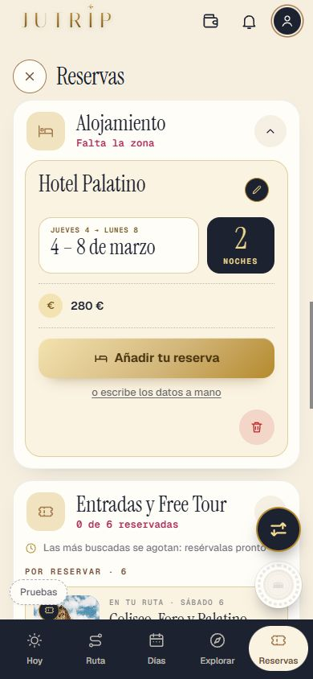
✅ Hecho — El enlace abre la hoja de datos de siempre, vacía y con sus ejemplos en gris («Datos del vuelo», «Datos de la reserva» con 15:00 y 11:00, «Datos de la entrada», «Datos de la excursión»)Probado en los cuatro sitios. Dónde: RESERVAS con pase, tocando el enlace. ✅ Hecho — Al guardar, sale el bloque de datos con su lápiz, como si viniera del documento (sin código)Lo escrito a mano cuenta como datos: alojamiento (cualquier campo), vuelo (localizador, terminal, asiento, coche), entrada (localizador) y excursión (localizador o personas, que ahora salen en una fila «N personas»). Dónde: RESERVAS con pase, tras guardar. ✅ Hecho — Sin pase, el enlace no saleComprobado en los cuatro sitios con una cuenta sin pase. Dónde: RESERVAS con una cuenta sin pase. ⚠️ A medias — Número de vuelo escrito a mano solo (sin nada más)No abre el bloque de datos: ese campo también sale de la hoja del vuelo y pruebaTanda10S8_C exige que sin tarjeta no haya lápiz de datos. Si quieres que lo abra, se cambia y se ajusta esa prueba. Además, la hoja «Añadir» (de la entrada) no lleva el enlace: no es de documento. Dónde: RESERVAS > Llegada y vuelta. 2 · Tocar fuera de una rueda vacía sin moverla ✅ Hecho — Se queda vacía; apuntado en las reglasRegla en REGLAS_DE_LA_APP.md (10S9b). Comprobado en la hoja «Añadir» (pruebaTanda10S9b_B). Dónde: Cualquier rueda de hora vacía: tocar fuera sin moverla. 3 · La rueda de la hoja «Añadir» ✅ Hecho — La hora, con la misma rueda que el resto de la app; el día en sus cuadrados y la hora con la rueda nuevaCasilla de hora que abre la hoja de hora de toda la app (desde abajo, ✓, tocar fuera guarda). La hora ya no se pone sola: la casilla sale con un ejemplo en gris (la hora de partida de antes) que no cuenta hasta elegirlo, y [Guardar la entrada] está apagado hasta entonces. En esta hoja la hora no tiene papelera (es obligatoria). Dónde: RESERVAS > Entradas y Free Tour > «Añádela» (también Free Tour y excursión). 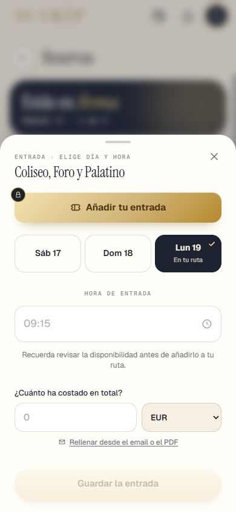
✅ Hecho — El ✓ guarda lo que se ve; tocar fuera con otra hora la guardaLa excursión no tiene prueba en pantalla propia (solo código y el ejemplo 07:00 o su primera salida). Dónde: La misma hoja. 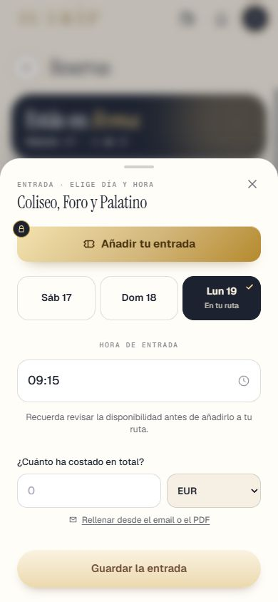
4 · Ostia, página del día ✅ Hecho — Cuadra con las 3 h de la tabla: salida 08:00, llegada 08:45, vuelta a Roma 11:00Antes 6 h y vuelta 14:00. El texto dice «antes de comer». La página del día 4 es un ejemplo escrito a mano. Dónde: Viaje de 4 días o más con excursión: día 4 > Ostia Antica. 5 · Las dos pruebas que fallaban ✅ Hecho — pruebaTanda10S4_I: zonas de toque de 44 × 44 en la ficha de un sitio, sin cambiar lo que se veClase zona-toque en Resumen/Entradas/Tips (FichaPiezas) y en «Añádela» (StopReservation y EntradaCard). Se ve igual; se toca más fácil. 78 comprobaciones, 0 fallos. Queda pequeño el «Cambiar» de las entradas ya reservadas (la prueba no lo mide). Dónde: DÍAS o EXPLORAR > ficha de un sitio > Resumen / Entradas / Tips y «¿Ya la tienes? Añádela». ✅ Hecho — pruebaCorr6z6_reservas: fechas enteras de la 10S8 y lo de «Sixt»«Miércoles 10» en vez de «mié 10» (decisión de Eric, 10S8). «Sixt» era «Capilla Sixtina» (un lugar de Roma), no el proveedor: no había nada que quitar de lo que ve el viajero; la prueba mira la palabra entera. 323 comprobaciones, 0 fallos. Dónde: No es de móvil. 6 · Los botones flotantes, siempre visibles ✅ Hecho — Logros, lápiz de la propuesta y «Reorganizar» quietos, siempre visibles; ya no se esconden al bajar ni se enseñan al subirQuitado escondidos/estiloEscondido/mostrarLosFlotantes. El hueco de abajo al final de cada pantalla (regla 10S5) se mantiene. Pruebas de la 10S9, 10S5_J y 10S9b comprobadas al día. Medido en el navegador de pruebas, no en un iPhone real. Dónde: RESERVAS y DÍAS, bajando y subiendo: los botones no se mueven. 7 · La prueba ✅ Hecho — pruebaTanda10S9b con todo lo anterior; capturas y REPASO_10S9b.htmlVer el informe. Pruebas viejas puestas al día: 10S3_D, 10S4_H, 10S7_S, 10S7_T, 10S9_A, 10S9_D, 10S5_J, 10O_datos (8 excursiones y precios con céntimos), 10N_reservas, 10N8_reservas, 10N10_reservas, Fase6y9_pantallas. Dónde: No es de móvil. Todas las capturas
10s9b_a_aloj_enlace_completa_1 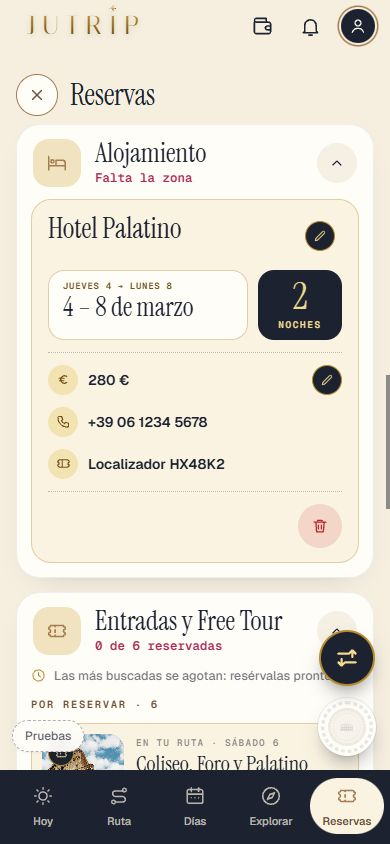
10s9b_a_aloj_guardado_completa_3 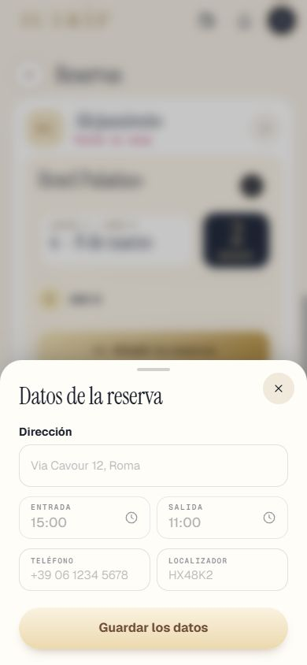
10s9b_a_aloj_hoja_completa_2 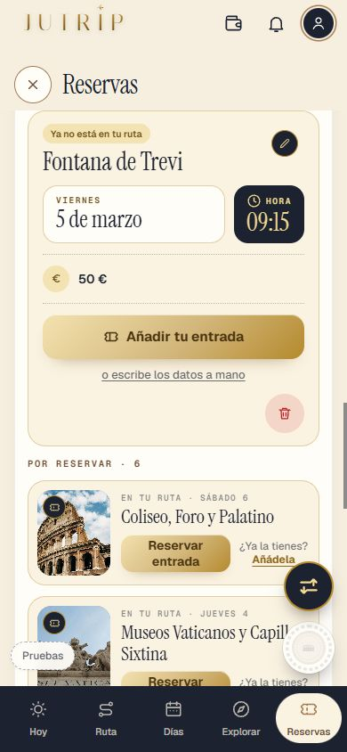
10s9b_a_entrada_enlace_completa_1 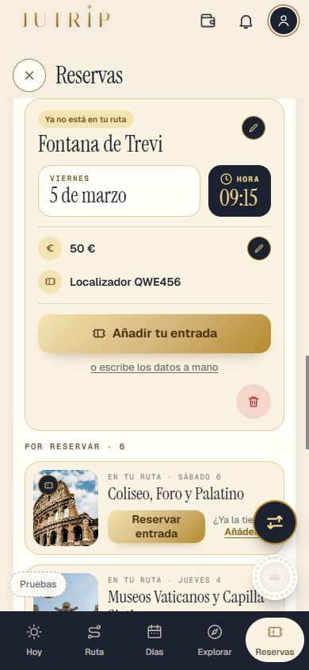
10s9b_a_entrada_guardado_completa_3 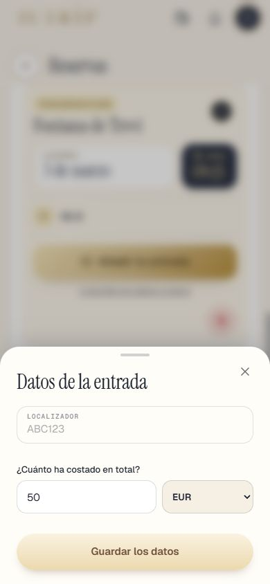
10s9b_a_entrada_hoja_completa_2 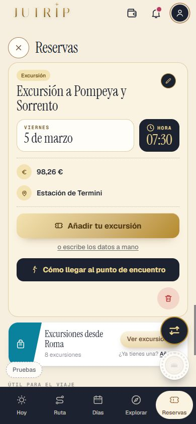
10s9b_a_excursion_enlace_completa_1 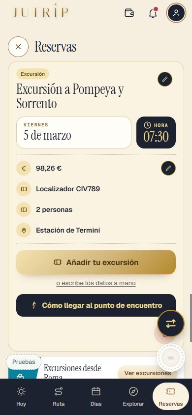
10s9b_a_excursion_guardado_completa_3 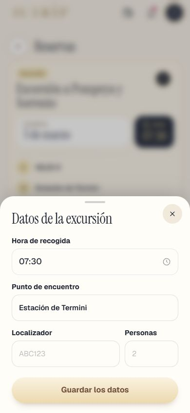
10s9b_a_excursion_hoja_completa_2 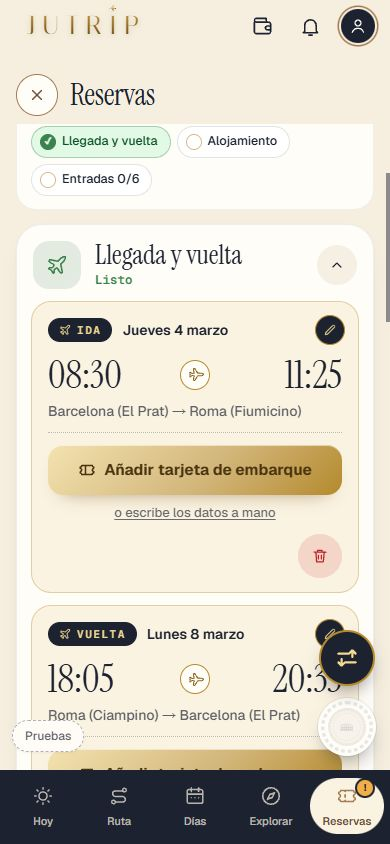
10s9b_a_vuelo_enlace_completa_1 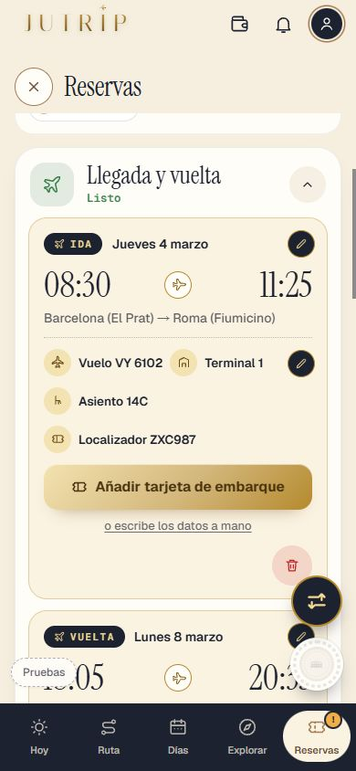
10s9b_a_vuelo_guardado_completa_3 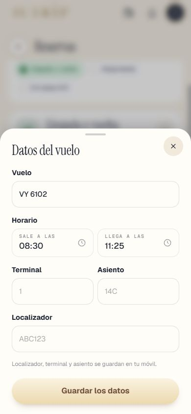
10s9b_a_vuelo_hoja_completa_2 10s9b_anadir_hora_1_casilla_ejemplo 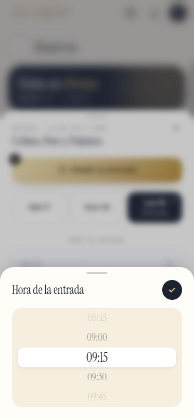
10s9b_anadir_hora_2_rueda 10s9b_anadir_hora_3_hora_elegida